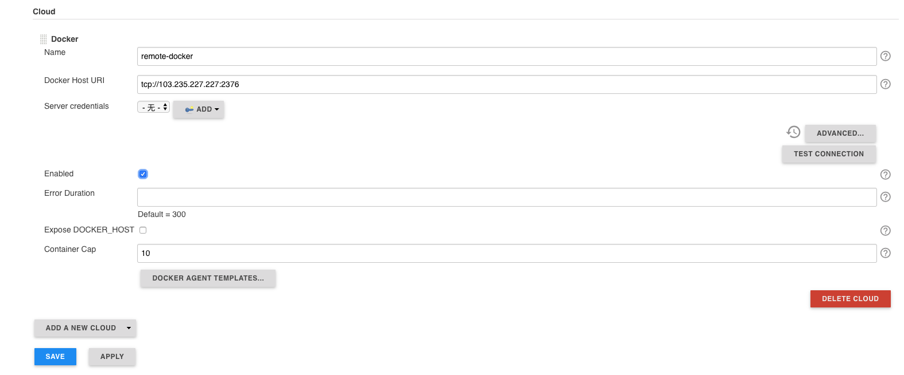

Docker 使用 Pipeline¶
使用 Docker 来跨主机同一构建和测试环境，并提供用于部署应用程序的高效机制。Pipeline 从 2.5 版本开始对通过 Jenkinsfile 和 Docker 交互提供内置的支持。
Docker 远程连接¶
Docker 默认通讯方式只支持本地形式调用，不支持 TCP 远程，如何增加 Docker 支持通过 TCP 方式管理 Docker，可通过配置文件形式，各个版本的配置方式不同。
通过配置文件配置
创建 /etc/docker/daemon.json 文件
{ "hosts": ["tcp://0.0.0.0:2376", "unix:///var/run/docker.sock"] }
通过 systemd 启动文件配置
[Unit] Description=Docker Application Container Engine Documentation=https://docs.docker.com After=network-online.target firewalld.service Wants=network-online.target [Service] Type=notify # the default is not to use systemd for cgroups because the delegate issues still # exists and systemd currently does not support the cgroup feature set required # for containers run by docker ExecStart=/usr/bin/dockerd ExecReload=/bin/kill -s HUP $MAINPID # Having non-zero Limit*s causes performance problems due to accounting overhead # in the kernel. We recommend using cgroups to do container-local accounting. LimitNOFILE=infinity LimitNPROC=infinity LimitCORE=infinity # Uncomment TasksMax if your systemd version supports it. # Only systemd 226 and above support this version. #TasksMax=infinity TimeoutStartSec=0 # set delegate yes so that systemd does not reset the cgroups of docker containers Delegate=yes # kill only the docker process, not all processes in the cgroup KillMode=process # restart the docker process if it exits prematurely Restart=on-failure StartLimitBurst=3 StartLimitInterval=60s [Install] WantedBy=multi-user.target
将以上配置中的
ExecStart=/usr/bin/dockerd修改为ExecStart=/usr/bin/dockerd -H unix:///var/run/docker.sock -H tcp://0.0.0.0:2375
重启服务
systemctl daemon-reload
systemctl restart docker
即可进行本地活远程 API 调用
Jenkins 插件安装¶
我们需要一些插件支持
- Docker Plugin 提供 Docker 构建和发布
- SSH Plugin 提供通过 SSH 在远程主机执行命令，用于部署服务
插件安装完成之后，进入 系统管理 -> 系统设置 -> Cloud，点击 ADD A NEW CLOUD 按钮，选择 Docker。
Attention
docker host url 需要加上 tcp://
配置执行环境¶
Pipeline 旨在轻松将 Docker 镜像用做单个 Stage 或整个 Pipeline 的执行环境。这意味着用户可以定义 Pipeline 所需的工具，而无需手动配置代理。实际上可以使用能装到 Docker 容器中的几乎所有工具。只需对 Jenkins 文件进行少量编辑即可轻松使用。
声明式 pipeline:
Jenkinsfile (Declarative Pipeline)
Pipeline {
agent {
docker { image: 'node:7-alpine' }
}
stages {
stage('Test') {
steps {
sh 'node --version'
}
}
}
}
对应的脚本式 Pipeline:
Jenkinsfile (Scripted Pipeline)
node {
/* Requires the Docker Pipeline plugin to be installed */
docker.image('node:7-alpine').inside {
stage('Test') {
sh 'node --version'
}
}
}
Pipeline 执行时，Jenkins 会自动启动指定的容器并通过这个容器执行定义的步骤：
[Pipeline] {
[Pipeline] stage
[Pipeline] { (Test)
[Pipeline] sh
[an-pipeline] Running shell script
+ node --version
v7.10.1
[Pipeline] }
[Pipeline] // stage
[Pipeline] }
缓存容器的数据¶
许多构建工具会下载并缓存额外的依赖以便后买呢再次使用。应为容器是通过干净的文件系统初始化创建的，这会导致 Pipeline 无法载多个步骤之间利用磁盘上的缓存而降低速度。
Pipeline 支持添加传递给 Docker 自定义参数，语序用户指定要装入的自定义 Docker 卷，这可用于在 Pipeline 运行之间在代理上缓存数据。以下示例将在使用 Maven 容器的管道运行之间缓存 ~/.m2 ，从而避免需要重新下载用于管道的后续运行的依赖关系。
声明式 Pipeline
Jenkinsfile (Declarative Pipeline)
pipeline {
agent {
docker {
image 'maven:3-alpine'
args '-v $HOME/.m2:/root/.m2'
}
}
stages {
stage('Build') {
steps {
sh 'mvn -B'
}
}
}
}
对应的脚本式 Pipeline
Jenkinsfile (Scripted Pipeline)
node {
/* Requires the Docker Pipeline plugin to be installed */
docker.image('maven:3-alpine').inside('-v $HOME/.m2:/root/.m2') {
stage('build') {
sh 'mvn -B'
}
}
}
使用多个容器¶
代码库依赖与多种不同的技术的场景正在变得越来越的常见。例如，一个存储库可能同时拥有一个基于 Java 的后端API实现和一个基于 JavaScript 的前端实现。在不同的阶段 stage 中通过使用 agent{} 指令可以将 docker 与 Pipeline 相结合，从而让 Jenkinsfile 使用多种类型的技术。
声明式 Pipeline
Jenkinsfile (Declarative Pipeline)
pipeline {
agent none
stages {
stage('Back-end') {
agent {
docker { image 'maven:3-alpine' }
}
steps {
sh 'mvn --version'
}
}
stage('Front-end') {
agent {
docker { image 'node:7-alpine' }
}
steps {
sh 'node --version'
}
}
}
}
对应的脚本式 Pipeline
Jenkinsfile (Scripted Pipeline)
node {
/* Requires the Docker Pipeline plugin to be installed */
stage('Back-end') {
docker.image('maven:3-alpine').inside {
sh 'mvn --version'
}
}
stage('Front-end') {
docker.image('node:7-alpine').inside {
sh 'node --version'
}
}
}
使用 Dockerfile¶
对于那些需要更多定制化执行环境的项目，Pipeline 还支持从代码仓库中的 Dockerfile 创建和运行容器。与以前使用“现成”容器的方法相反，使用 agent { dockerfile true } 语法将从 Dockerfile 构建新的镜像，而不是从 Docker Hub 中获取一个镜像。
再次使用上面的示例，这次使用更加定制化的 Dockerfile
Dockerfile
From node:7-alpine
RUN apk add -u subversion
把这个代码提交到代码仓库的根目录，Jenkinsfile 可以被设置为通过这个 Dockerfile 创建容器，然后使用这个容器运行指定的步骤
Jenkinsfile (Declarative Pipeline)
pipeline {
agent { dockerfile true}
stages {
stage('Test') {
steps {
sh 'node --version'
sh 'svn --version'
}
}
}
}
agent { dockerfile true } 语法支持一系列其他选项，参考 Pipeline 语法章节
指定 Docker 标签¶
默认情况喜爱，Pipeline 会嘉定所有配置的 代理 都有能力运行基于 Docker 的 Pipeline。对于无法运行 Docker 守护程序的 macOS，Windows 或其他代理的 Jenkins 环境，此默认设置可能存在问题。Pipeline 在 Manager Jenkins 页面和文件夹级别提供全局选项，用于通过标签指定用于运行基于 Docker 的 Pipeline 的代理。
脚本式 Pipeline 高级用法¶
运行 “sidecar” 容器¶
在 Pipeline 中使用 Docker 可以高效的运行构建活测试所依赖的服务。与 sidecar 模式 类型，Docker Pipeline 可以在后台运行一个容器，而在另一个容器中执行工作。利用这种 sidecar 方法，Pipeline 可以为每个 Pipeline 运行配置一个“干净”的容器。
考虑一个假设的集成测试套件，它依赖与本地的 MySQL 数据库来运行。使用 Docker Pipeline 插件对脚本式 Pipeline 的支持中实现的 withRun 方法，Jenkinsfile 可以作为 sidecar 运行 MySQL：
node {
checkout scm
/*
* In order to communicate with the MySQL server，this Pipeline explicitly
* maps the port (`3306`) to a known port on the host machine.
*/
docker.image('mysql:5').withRun('-e "MYSQL_ROOT_PASSWORD=my-secret-password" -p 3306:3306') { c ->
/* Wait until mysql server is up */
sh 'while ! mysqladmin ping -h 0.0.0.0 --silent; do sleep 1; done'
/* Run some tests which require MySQL */
sh 'make check'
}
}
这个例子可以进一步采用，同时使用两个容器。一个“sidecar”运行 MySQL，另一个提供执行的环境，通过使用 Docker 容器链接。
node {
checkout scm
docker.image('mysql:5').withRun('-e "MYSQL_ROOT_PASSWORD=my-secret-password"') { c ->
docker.image('mysql:5').inside("--link ${c.id}:db") {
/* Wait until mysql service is up */
sh 'while ! mysqladmin ping -hdb --silent; do sleep 1; done'
}
docker.image('centos:7').inside("--link ${c.id}:db") {
/*
* Run some tests which require MySQL, and assume that it is
* available on the host name `db`
*/
sh 'make check'
}
}
}
以上示例使用 withRun 公开对象，该对象具有可通过 ID 属性获取正在运行的容器ID。使用容器的ID，Pipeline 可以通过将定制的 Docker 参数传递给 inside() 方法来创建一个链接。
在管道退出之前，ID 属性对于检查正在运行的 Docker 容器中的日志也很有用：
sh "docker log ${c.id}"
构建容器¶
为了创建一个 Docker 镜像，Docker Pipeline 插件还提供了一个 build() 方法，用于在 Pipeline 运行期间从存储库中的 Dockerfile 创建一个新镜像。
使用语法 docker.build("my-image-name") 的一个主要好处是脚本式 Pipeline 可以为后续的 Docker Pipeline 调用使用返回值，例如：
node {
checkout scm
def customImage = docker.build("my-image:${env.BUILD_ID}")
customImage.inside {
sh 'make test'
}
}
返回值还可以用于通过 push() 方法将 Docker 镜像发布到 Docker Hub 或自定义注册表，例如：
node {
checkout scm
def customImage = docker.build("my-image:${env.BUILD_ID}")
customImage.push()
}
镜像“标签”式一个常见用法是为最近验证的 Docker 镜像版本指定 latest 的标签，push() 方法接受一个可选的标签参数，允许 Pipeline 用不同的标签推送 customImage，例如：
node {
checkout scm
def customImage = docker.build("my-image:${env.BUILD_ID}")
customImage.push()
customImage.push('latest')
}
build() 方法默认在当前目录下构建 Dockerfile。可以通过第二个参数指定提供 Dockerfile 的目录路径来覆盖默认值，例如：
node {
checkout scm
def testImage = docker.build("test-image", "./dockerfile/test")
testImage.inside {
sh 'make test'
}
}
可以将其他参数传递给 build() 方法的第二个参数来传递给 docker build。以这种方式传递参数时，该字符串中得分最后一个值必须时 docker 文件的路径。
这个例子通过 -f 标志覆盖默认的 Dockerfile：
node {
checkout scm
def dockerfile = "Dockerfile.test"
def customImage = docker.build("my-image:${env.BUILD_ID}", "-f ${dockerfile} ./dockerfiles")
}
根据 ./dockerfiles/Dockerfile.test 中的 Dockerfile 构建 my-image:${env.BUILD_ID}
使用远程 Docker 服务器¶
默认情况下，Docker Pipeline 插件会与本地 Docker 守护进程通信，通常是通过 /var/run/docker.sock 来实现的。
要选中非默认的 Docker 服务器，例如 Docker Swarm，需要使用 withServer() 方法。
通过传递 URL 和可选的在 Jenkins 中预先配置的 Docker 服务器授权认证（Docker Server Certificate Authentication）的凭证 ID 到这个方法：
node {
checkout scm
docker.withServer('tcp://swarm.example.com:2376', 'swarm-certs') {
docker.image('mysql:5').withRun('-p 3306:3306') {
/* do things */
}
}
}
Note
在盒子外面（out of the box），inside() 和 build() 将无法正常使用 Docker Swarm 服务器。 要使 inside() 可以工作，Docker 服务器和 Jenkins 代理必须使用相同的文件系统，这样才能挂载工作控件。
目前 Jenkins 插件和 Docker CLI 都不会自动家册服务器远程运行情况；一个典型的症状将是嵌套的 sh 命令错误，例如
cannot create /…@tmp/durable-…/pid: Directory nonexistent
当 Jenkins 检测到代理本身在 Docker 容器中运行时，他会自动将 -->volumes-from 参数传递给内部容器，以确保它可以与代理共享工作区。
此外某些版本的 Docker Swarm 不支持自定义的 registry。
使用自定义 registry¶
默认情况下，Docker Pipeline 集成使用 Docker Hub 的默认 Docker registry。
要使用自定义 Docker Registry，脚本式 Pipeline 的用户可以使用 withRegistry() 方法包裹每个步骤，并传入指定的 Registry 的 URL：
node {
checkout scm
docker.withRegistry('https://registry.exmaple.com') {
docker.image('my-custom-image').inside {
sh 'make test'
}
}
}
对于需要认证的 Docker Registry，在 jenkins 首页增加一条 “Username/Password” 凭证，并使用凭证的ID作为 withRegistry() 的第二个参数：
node {
checkout scm
docker.withRegistry('https://registry.example.com', 'creadentials-id') {
def customImage = docker.build("my-image:${env.BUILD_ID}")
/* Push the container to the custom Registry */
customImage.push()
}
}